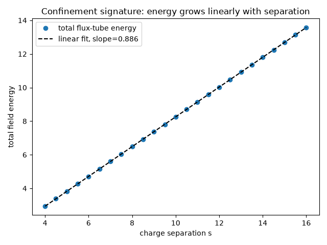

Note
Go to the end to download the full example code.
A confining flux tube stretching between two charges#
Kenneth Wilson’s 1974 lattice gauge theory (“Confinement of Quarks”) showed that, in the strong-coupling limit, the potential energy of a static quark-antiquark pair grows linearly with separation, rather than falling off the way an ordinary Coulomb field does – the defining signature of confinement. The physical picture is that the gluon field lines are squeezed into a narrow “flux tube” of fixed cross-section connecting the two charges, rather than spreading out in all directions the way an ordinary Coulomb field would.
flux_tube_field_1d() builds
this toy model directly from the 1D Gauss law relating the confined flux
\(\Phi(x)\) to the charge density \(\rho(x)\),
where the two opposite point charges of magnitude \(Q\)
(flux_quantum), placed a separation \(s\) apart at
\(x=\mp s/2\), are each smoothed into a Gaussian \(g_w\) of width
wall_width (a numerical regularization of the point charge, not a
physical effect); \(\Phi(x)\) is obtained by direct numerical
integration of \(\rho\).
flux_tube_energy_density_2d()
extrudes this 1D flux into a 2D energy-density map by giving it a fixed
transverse (tube_width) Gaussian profile – the “fixed cross-section”
that produces confinement –
Because Gauss’s law forces \(\Phi\) to stay pinned at \(\pm Q\)
along the whole length of the tube regardless of how far apart the
charges are, the total field energy \(\int u\,dx\,dy\) grows
linearly with the separation \(s\) – the confinement signature,
reproduced here by direct construction rather than derived from an
underlying gauge-invariant Lagrangian.
flux_tube_field_1d() and
flux_tube_energy_density_2d()
reproduce only this qualitative signature, as a simplified 1+1D toy
model – not a lattice-QCD calculation.
import matplotlib.pyplot as plt
import numpy as np
from physicskit.fields import animate_flux_tube, flux_tube_energy_density_2d
Stretch the flux tube by animating a sweep of charge separations#
The two charges live on a 200x40 grid and are swept from a separation
of 4 to 16 grid units; at each separation, animate_flux_tube()
re-solves the static field profile from scratch (there is no time
dependence within a single separation – the “animation” is over the
quasi-static parameter \(s\), not real time).
shape = (200, 40)
dx = dy = 0.2
separations = np.linspace(4.0, 16.0, 25)
anim = animate_flux_tube(shape, dx, dy, separations)
plt.show()
To save the animation to a file instead of (or in addition to) displaying it interactively, use e.g.:
anim.save("flux_tube.gif", writer="pillow", fps=12)
The total confined field energy grows linearly with separation – a straight line, not a Coulomb-like falloff or a plateau – exactly the confinement signature Wilson’s lattice calculation predicted.
total_energy = np.array([flux_tube_energy_density_2d(shape, dx, dy, sep).sum() * dx * dy for sep in separations])
fit = np.polyfit(separations, total_energy, 1)
linfit_error = np.max(np.abs(total_energy - np.polyval(fit, separations)))
print(f"energy vs. separation slope: {fit[0]:.4f} (should be > 0, roughly constant -- confinement)")
print(f"deviation from a straight-line fit: {linfit_error:.2e}")
energy vs. separation slope: 0.8862 (should be > 0, roughly constant -- confinement)
deviation from a straight-line fit: 3.74e-07
The confinement signature itself: a straight line, not a Coulomb falloff#
The animation shows the tube’s shape stretching, but not the energetics that make it confinement rather than an ordinary field. Plotting the already-computed total field energy directly against separation makes the defining signature explicit: a straight line all the way out, in sharp contrast with an unconfined Coulomb-like field, whose energy would instead flatten out (approach a constant) at large separation as the field simply spreads into the extra room available.
fig2, ax2 = plt.subplots()
ax2.plot(separations, total_energy, "o", label="total flux-tube energy")
ax2.plot(separations, np.polyval(fit, separations), "k--", label=f"linear fit, slope={fit[0]:.3f}")
ax2.set_xlabel("charge separation s")
ax2.set_ylabel("total field energy")
ax2.set_title("Confinement signature: energy grows linearly with separation")
ax2.legend()
fig2.tight_layout()

Check#
A confined flux tube costs energy linear in the separation (constant string tension), unlike the Coulomb field’s.
assert fit[0] > 0 and linfit_error < 1e-5 * total_energy.max()
Total running time of the script: (0 minutes 2.812 seconds)